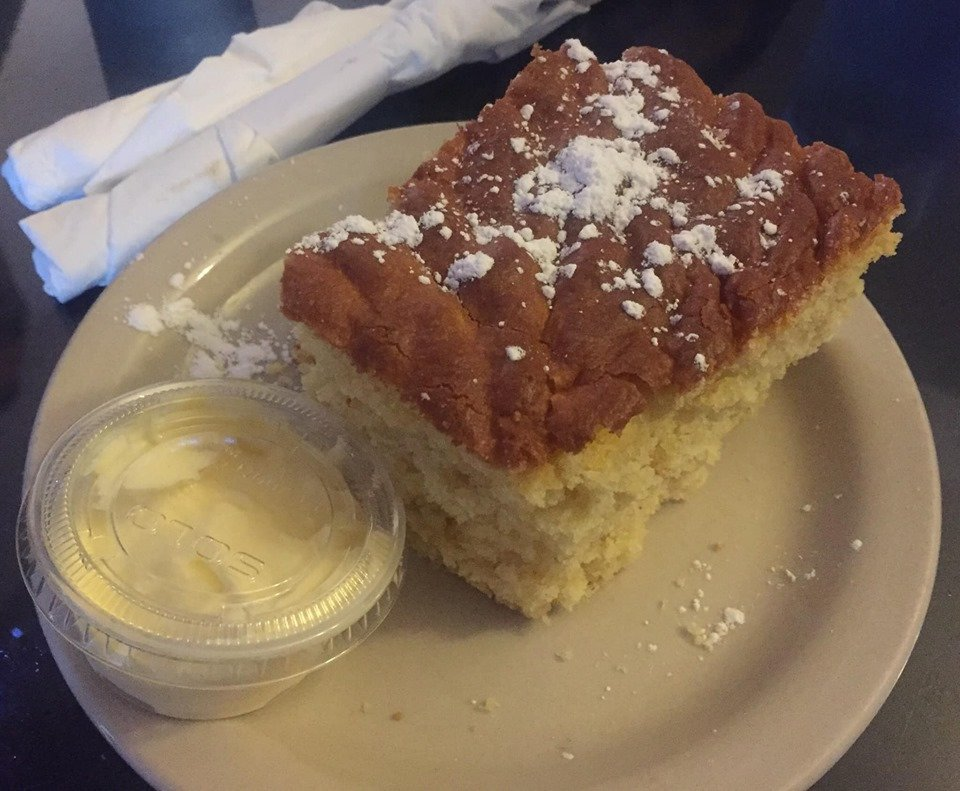
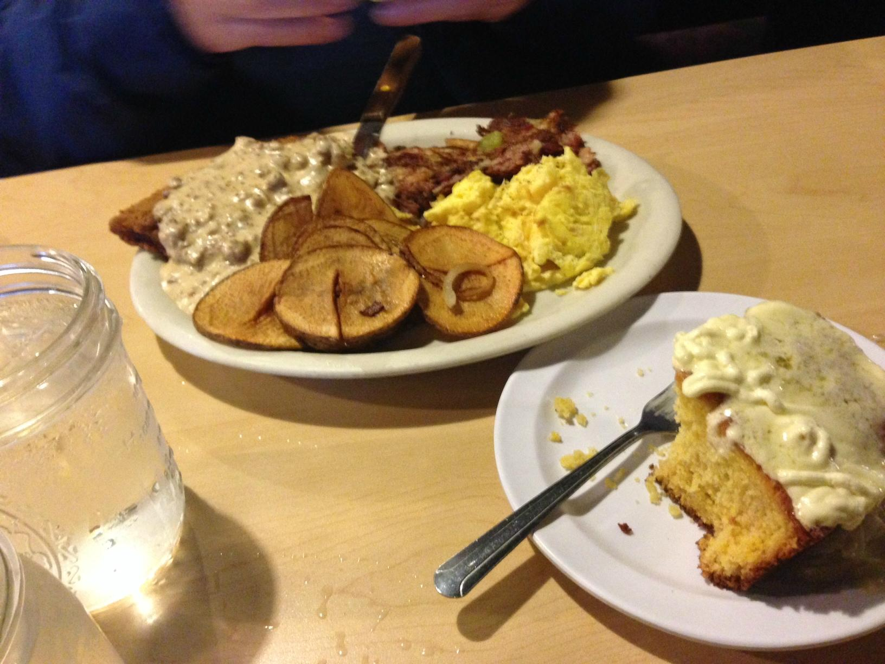

★★★★★
“Great atmosphere and aesthetic.”
Jaime GarciaGoogle · a month ago

Breakfast & brunch · Sumner, WA
Hearty plates, warm cornbread, and room for one more at the table.
When to find us

Your kind of breakfast place
This is the place for a breakfast with a little extra on the plate.
The menu has a sense of humor: Don’t Be a Chicken, Chupacabra, the Trainwreck Scramble. The plates mean business. Find your way to North Street for biscuit stacks, French toast, and a side of that cornbread.
Take a look around →Save a little room
Golden, generous, and ready for that honey butter.
It made an appearance on FOX 13’s breakfast visit, and it still has a place on the menu. A little sweet, a little Southern, and very much part of the Buttered Biscuit experience.
Find the little extras →
A place to gather

From the tables
“Great atmosphere and aesthetic.”
Jaime GarciaGoogle · a month ago
“Definitely won't leave hungry, portions are very generous.”
Rob BerryGoogle · a month ago
“Over the top - delish!”
D. EdwardGoogle · 2 months ago
Google review excerpts via RestaurantGuru. Relative dates as shown September 6, 2026.

The people behind the plates
When FOX 13 visited in 2019, owner Tami Haskins talked about the regulars who became part of the restaurant’s story. It’s a reminder that the table matters as much as the meal.
Read the story →See you at the table
Come for the biscuit stack. Stay for the conversation.